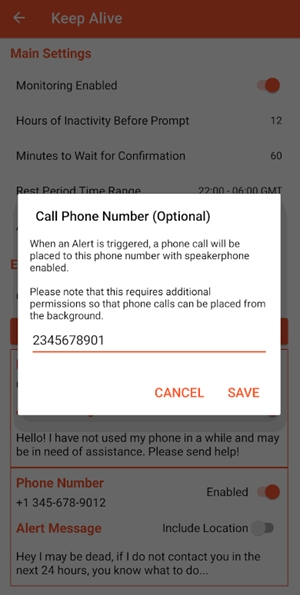
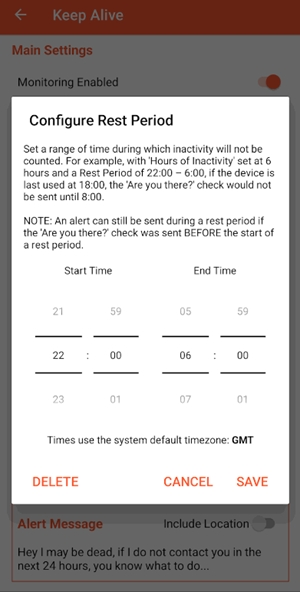

装了八个月 Keep Alive，这个什么都不做的安全应用让我想通了一件事
从 1.5.0 beta 到 1.5.2-alpha，八个月的被动运行让我重新理解了"安全兜底"——最好的保险是你忘了它存在的时候它还在工作。
装它到现在八个月了，从 1.5.0 beta 一路更到 1.5.2-alpha。当初为什么装？独居加经常熬夜赶项目，有天夜里两点醒过来想，如果哪天我在电脑前出事了没人发现——就这么个念头，第二天从 Keep Alive官网 下了安装包。
从别扭到习惯：那些我慢慢调对的设置
刚装的时候什么都是默认值——12 小时触发、22:00 到 06:00 休息时段、两个紧急联系人。那时候对它没什么概念，觉得"能跑就行"。
第一个真正让我觉得有用的，是把联系人从两个加到了五个位置。一开始只填了我老婆和我妈，后来翻 Keep Alive文档 看到慢性病患者那篇才意识到：两个人同时没看手机的概率不算低。现在五个位置排得满满的——老婆、我妈、小区诊所的家庭医生、合租的室友、对门邻居。倒不是真的有什么具体的危险，就是觉得"多几个人知道总没坏处"。

休息时段也从默认的 22:00–06:00 改成了 23:00–07:00——我本来就是晚睡晚起的人，默认值里早上 6 点到 7 点那一小时我可能还在赖床刷手机，但如果哪天真的睡到上午 10 点才醒，那中间三小时"没动手机"加上前一天的晚睡，凑起来可能就触发了。改完之后再没出过这方面的误报。

当初没发现的那些小问题
用了几个月才慢慢冒出一些当初没注意到的麻烦事。
最大的是国产 ROM 对开机自启动的态度。我用的某厂系统，每次大版本更新之后，自启动权限会被悄悄关掉。上次系统更完我忘了检查，过了三天才发现 Keep Alive 其实根本没在跑——重启之后它就没启动起来。现在养成了习惯，每次系统更新完第一件事就是去安全中心把自启动勾上。
还有那个只有一个休息时段的限制。我有个固定的午觉习惯，每天 13:00 到 14:30 必睡。但 Keep Alive 只支持设一段休息时间，要么覆盖晚上睡觉，要么覆盖午觉，不能两边都占。试过把触发时长改到 18 小时，但那样真出事的话预警就太慢了——12 小时我觉得是个比较合理的"兜底时间窗口"。最后妥协的办法是只设晚上的休息时段，午觉那 1.5 小时靠确认弹窗来防误报——反正如果真的凑够了触发时间，弹窗会先弹出来让我点一下，我午觉睡醒随手就能处理。
当初选 Lite 版也是冲着轻量去 Keep Alive下载 拿的安装包，才几 MB。Lite 版不申请网络权限这点我当初觉得是缺点，后来发现反而是优点——它真的什么都不上传，完全本地运算。没有账号、没有云端备份，换手机需要重新配置，但换来的是真的不用担心隐私问题。
反直觉的感受：我居然没"每天离不开"它
说个反直觉的——八个月下来，我居然没有哪个时刻觉得"没有 Keep Alive 不行"。
它的设计逻辑就是这样：被动观察，不打扰。你正常用手机就等于在报平安，它连个状态通知都很少弹出来（除非快触发了才会显示倒计时）。对比之前试过的那种每日打卡应用——每天必须点一下"我还活着"，刚开始还新鲜，一个星期之后就变成了条件反射，真出事的时候反而可能忘了。
Keep Alive 的价值恰恰在于你忘了它。有几次我出差回来累得倒头就睡，第二天中午才醒，拿起手机才想起"哦对，Keep Alive 还在跑"——打开一看，它确实一直在计时、一直在过滤休息时段，一切正常。
当初高估了什么，低估了什么
刚开始用的时候，我高估了它的"预警速度"——以为 12 小时是个太长的窗口。后来才想明白：如果你真的出事了，12 小时已经是相当快的兜底了。日常场景下，谁会连续 12 小时不动手机？要么是真的出事了，要么是在飞机上或深山里。后者那种场景谁都救不了，前者才是它的目标用户。
我还低估了它的"边界感"。刚开始以为它能替代手动报警——不，它不能。Keep Alive 的定位文档里写得很清楚：能手动打 120 的永远手动打。它只在"动不了"的时候有用——比如意识清醒但浑身无力、中风后无法说话、心脏病发作后手机就在旁边但点不动屏幕。这个边界写得明明白白，倒让我觉得踏实——它不吹自己能做什么，只说清楚自己做什么。
去留结论：不会卸载，但有一个信号
八个月了，我不会卸载它。原因很简单——它太便宜了。一部安卓手机、几分钟配置，就能多一层兜底。对比智能手表的硬件级跌倒检测——价格高、需要持续佩戴、还要担心续航——Keep Alive 是成本最低的那道保险。
什么情况出现会让我换掉它？如果哪天我换了一款有靠谱硬件级健康监测的智能手表，心率异常报警、跌倒检测都能做到毫秒级，那时候 Keep Alive 的"12 小时兜底"可能就显得太慢了。但就现在的条件——我不爱戴手表、手机 24 小时不离身——Keep Alive 恰好是最适合我的方案。
这套 Keep Alive 的完整资料我同步维护在三个仓库里，GitHub、Gitee、GitCode 都能直接找到，国内访问哪个方便就用哪个。说到底，Keep Alive 教会我一件事：安全兜底不需要花哨的功能，不需要每天打卡，不需要云端服务器存你的健康数据。最好的保险，是你忘了它存在的时候，它还在默默工作。